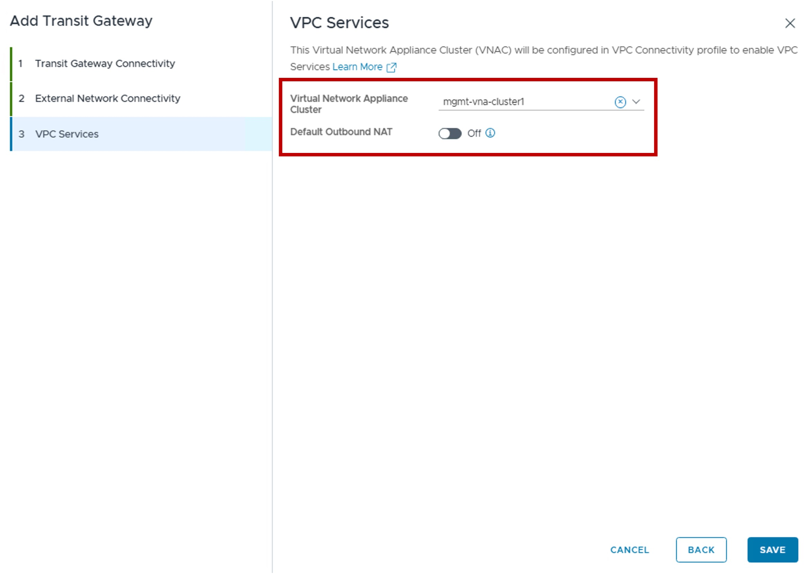

Transit Gateway Configuration in vCenter
Transit Gateway Configuration in vCenter
This section describes the procedures for configuring Transit Gateways using the vSphere Client.
Transit Gateways (Centralized or Distributed) provide the routing between VPC Gateways and physical networks.
{kind=link}
Overview of Transit Gateway Types
| Type | Use Case | Routing Logic |
|---|---|---|
| Centralized TGW | Supports extra network stateful services (VPN). | Egress traffic is hairpinned through a centralized Tier-0/VRF gateway hosted on an Edge Cluster. |
| Distributed TGW | Optimized for high-throughput distributed routing (supports Outbound-NAT and LB via VNA Nodes). | Routing occurs locally at the ESXi host level (distributed dataplane). NAT and LB traffic is redirected through a VNA Gateway in a VNA Cluster. |
{kind=link}
Configuration Centralized Transit Gateway
Requirement
An Edge Cluster must be pre-provisioned in the environment.
1. Create new Centralized Transit Gateway
{kind=link}
2. Configure Centralized Transit Gateway Connectivity
{kind=link}
-
Span:
Determines how VPC subnets below this Transit Gateway will extend across vCenter clusters.
For more information on Network Span, refer to the Network Span page. -
Connection:
Select "Centralized Connection". -
High Availability Mode:
Select the operational redundancy and service support:
. Active/Active: Maximizes throughput and scalability by distributing the Transit Gateway load across multiple Edge Nodes simultaneously.
Active/Standby: Required for stateful network services (NAT and VPN). In this mode, this Transit Gateway North/South traffic is processed by a single "Active" Edge Node to maintain session state. -
TGW Edge Cluster:
Select the specific Edge Cluster that will host this Centralized Transit Gateway.
3. Configure Workload Domain Connectivity
{kind=link}
-
External Connection:
You can create a new or use an existing Centralized External Connection.
Limited configuration settings are available if creating a new Centralized External Connection from here (only Tier-0 information).
For more information on External Connection, refer to the External Connection page. -
VPC Network Configuration
This optional settings creates a new Connectivity Profile: For more information on Connectivity Profile, refer to the Connectivity Profile page.- VPC External IP Blocks: Select or create a new External IP Block for future VPC Public subnets.
- Private - Transit Gateway IP Blocks: Select or create a new Private TGW IP Block used for future VPC Private-TGW subnets.
- Default Outbound NAT: Enable the automatic Source NAT (N:1 SNAT) for future VPC Private-TGW and Private-VPC subnets.
4. Result - Centralized External Connection Status
The status reflects the successful application of the configuration.
Note
Because this represents a logical configuration mapping rather than an active link-state protocol, the status will typically remain Green (Healthy) once the settings are validated by the NSX Manager.
{kind=link}
Configuration Distributed Transit Gateway
1. Create new Distributed Transit Gateway
{kind=link}
2. Configure Distributed Transit Gateway Connectivity
{kind=link}
3. Configure External Network Connectivity
{kind=link}
-
External Connection:
You can create a new or use an existing Distributed External Connection.
Limited configuration settings are available if creating a new Distributed External Connection from here (only Tier-0 information).
For more information on External Connection, refer to the External Connection page. -
VPC Network Configuration
This optional settings creates a new Connectivity Profile: For more information on Connectivity Profile, refer to the Connectivity Profile page.- VPC External IP Blocks: Select or create a new External IP Block for future VPC Public subnets.
- Private - Transit Gateway IP Blocks: Select or create a new Private TGW IP Block used for future VPC Private-TGW subnets.
4. Configure VPC Service
Option to offer Network Services NAT, LB, AVI Plugin.

{kind=link}
-
Virtual Network Appliance Cluster:
Select the VNA Cluster to host the VNA Gateway.
For more information on VNA, refer to the VNA page. -
Default Outbound NAT
Enable the automatic Source NAT (N:1 SNAT) for future VPC Private-TGW and Private-VPC subnets.
5. Result - Distributed External Connection Status
The status reflects the successful application of the configuration.
Note
Because this represents a logical configuration mapping rather than an active link-state protocol, the status will typically remain Green (Healthy) once the settings are validated by the NSX Manager.
{kind=link}